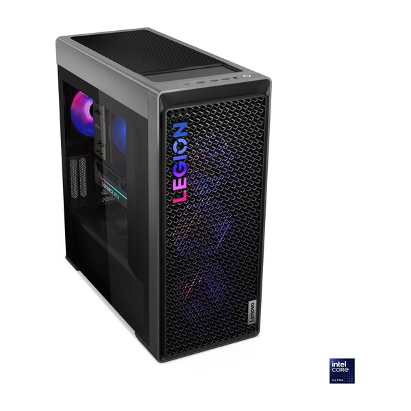
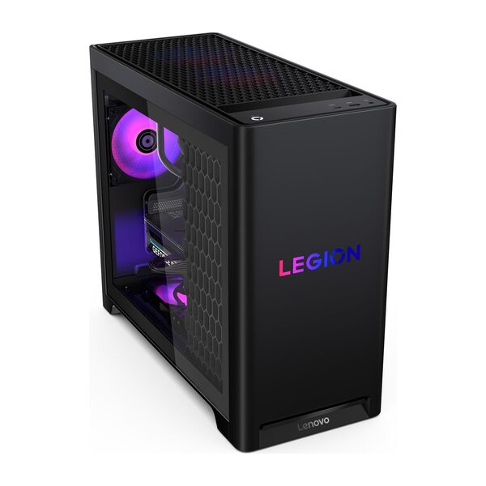
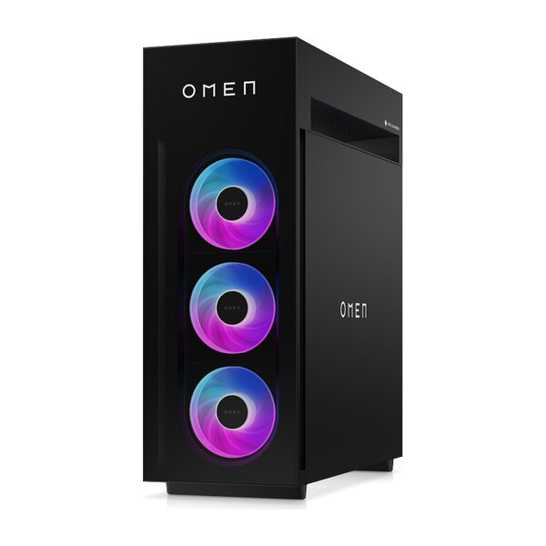
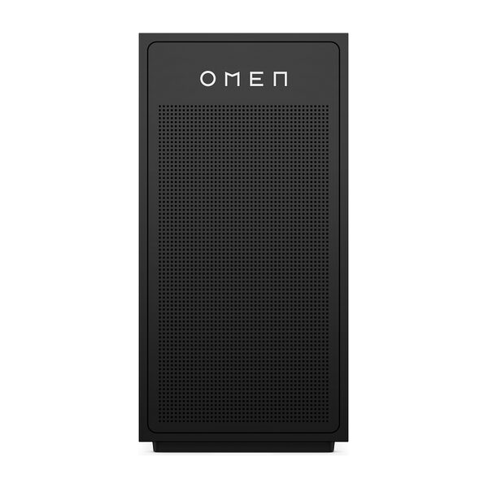
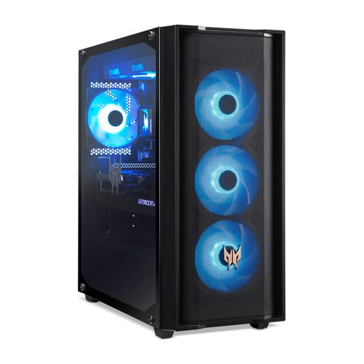
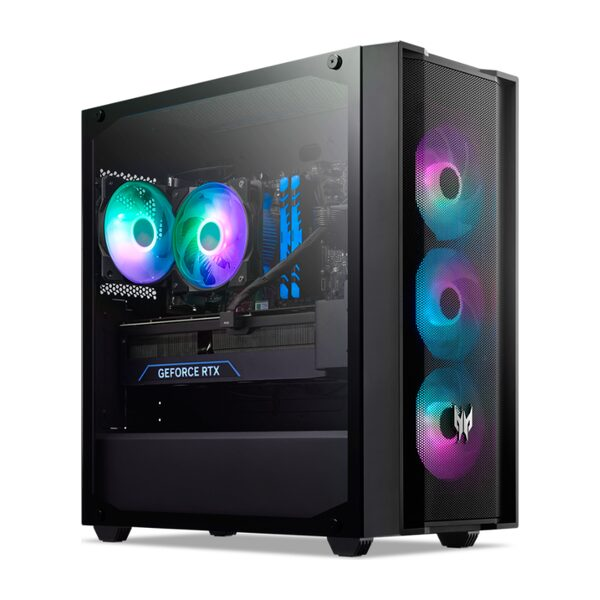

Lenovo Legion Tower 7i (34L, 10)
Ra mắt 01/2025


 5Đã bán 76
So sánh
5Đã bán 76
So sánh
 5Đã bán 145
So sánh
5Đã bán 145
So sánh
 5Đã bán 26
So sánh
5Đã bán 26
So sánh
 5Đã bán 35
So sánh
5Đã bán 35
So sánh
 5Đã bán 52
So sánh
5Đã bán 52
So sánh

Các mẫu dưới đây chưa bán tại Thế Giới Di Động, chỉ để tham khảo thêm cấu hình trên thị trường. Không tính vào số sản phẩm của trang.

Ra mắt 01/2025

Ra mắt 01/2025
Dự kiến ra mắt 01/2027
Dự kiến ra mắt 2027

Ra mắt 08/2025

Ra mắt 08/2025
Dự kiến ra mắt 03/2027

Ra mắt 09/2025

Ra mắt 09/2025
Dự kiến ra mắt 2027
PC Gaming là máy tính để bàn được thiết kế chủ yếu cho nhu cầu chơi game. Bên trong máy thường có CPU, card đồ họa rời, RAM, SSD, bộ nguồn, quạt tản nhiệt và các linh kiện cần thiết để máy hoạt động ổn định.

Các thành phần linh kiện chính cấu tạo nên bộ PC Gaming và gợi ý cấu hình theo từng nhu cầu trải nghiệm thực tế.
Card đồ họa rời là bộ phận chính xử lý nhân vật, môi trường, ánh sáng và chuyển động trong game. Nhờ đó, PC Gaming có thể chơi được những trò nặng hơn máy tính văn phòng chỉ dùng card đồ họa tích hợp.
Người mua cũng cần lưu ý giá PC Gaming thường chỉ bao gồm thùng máy và linh kiện bên trong. Màn hình, bàn phím, chuột, tai nghe hoặc loa có thể phải mua riêng nếu trang sản phẩm không ghi rõ là quà tặng hay phụ kiện đi kèm.
PC Gaming không chỉ dành cho người chơi game chuyên nghiệp. Sản phẩm còn phù hợp với học sinh, sinh viên, người làm nội dung và người cần một chiếc máy có thể nâng cấp sau này.
Card đồ họa rời giúp máy xử lý hình ảnh game nhanh hơn, đặc biệt khi trò chơi có nhiều nhân vật, hiệu ứng hoặc cảnh chuyển động liên tục. Đây là bộ phận ảnh hưởng rõ nhất đến độ đẹp của hình ảnh và số khung hình máy tạo ra trong mỗi giây.

Card đồ họa rời (VGA) chịu trách nhiệm xử lý toàn bộ hiệu ứng đồ họa 3D phức tạp và duy trì số khung hình trên giây (FPS) ổn định.
Nếu thường chơi game hành động, đua xe hoặc bắn súng, card đồ họa tốt sẽ giúp chuyển động ít bị giật hơn. Người mua vì vậy nên chọn card theo đúng trò chơi và màn hình đang sử dụng, thay vì chỉ nhìn vào tên CPU.
Thùng máy có nhiều không gian để bố trí quạt và đưa khí nóng ra ngoài. Nhờ đó, CPU và card đồ họa có thể hoạt động ổn định hơn khi người dùng chơi game liên tục trong nhiều giờ.

Nguyên lý đối lưu không khí trong vỏ case PC: Quạt hút gió mát vào từ mặt trước và quạt đẩy khí nóng sinh ra từ linh kiện ra phía sau.
PC Gaming cũng dễ lắp thêm quạt hoặc thay bộ tản nhiệt nếu nhiệt độ máy còn cao. Đây là lợi thế đáng chú ý với người thường chơi game vào buổi tối, livestream hoặc sử dụng các phần mềm nặng.
Người dùng có thể lắp thêm RAM, bổ sung SSD hoặc thay card đồ họa mà không nhất thiết phải mua lại toàn bộ máy. Chẳng hạn, một máy có RAM 8GB có thể được nâng lên 16GB khi người dùng bắt đầu chơi game nặng hoặc mở nhiều phần mềm cùng lúc.
Khả năng thay từng linh kiện giúp PC Gaming có thể sử dụng trong thời gian dài hơn. Tuy nhiên, trước khi nâng cấp, người dùng nên hỏi kỹ máy có còn chỗ lắp linh kiện và việc tự tháo máy có ảnh hưởng đến bảo hành hay không.
Màn hình 144Hz có thể hiển thị hình ảnh nhiều lần hơn màn hình 60Hz trong cùng một giây. Tuy nhiên, để thấy được sự khác biệt, máy tính cũng phải tạo ra đủ số khung hình tương ứng.

Sức mạnh từ card đồ họa rời giúp PC Gaming xuất ra tốc độ khung hình (FPS) cao tương thích hoàn hảo với tần số quét (Hz) của màn hình gaming.
PC Gaming có card đồ họa rời nên dễ đáp ứng màn hình 120Hz, 144Hz hoặc cao hơn trong các trò chơi Esports. Người mua vẫn cần chọn cấu hình phù hợp, vì màn hình càng sắc nét thì card đồ họa càng phải xử lý nhiều hơn.
Game Esports như Valorant, Liên Minh Huyền Thoại hoặc Counter-Strike 2 thường ưu tiên tốc độ và số khung hình cao. Trong khi đó, các game bom tấn có bản đồ rộng và hình ảnh đẹp sẽ cần card đồ họa mạnh hơn.

Cấu hình PC Gaming linh hoạt đáp ứng từ các tựa game Esports nhẹ nhàng yêu cầu phản hồi nhanh đến game AAA thế giới mở nặng về đồ họa.
PC Gaming cho phép người dùng chọn cấu hình dựa trên nhóm game mình thường chơi. Việc xác định nhu cầu từ đầu sẽ giúp tránh mua máy quá yếu hoặc tốn tiền cho những linh kiện chưa cần dùng đến.
Ngoài chơi game, PC Gaming vẫn có thể dùng để học trực tuyến, làm Word, Excel, lập trình hoặc chỉnh sửa hình ảnh. Card đồ họa rời còn hỗ trợ tốt hơn khi dựng video, thiết kế hoặc làm các bài tập có hình ảnh 3D.

Khả năng xử lý đa nhiệm mạnh mẽ của PC Gaming giúp tối ưu hiệu năng làm việc văn phòng, lập trình đồ họa và render video song song.
Vì vậy, một bộ PC Gaming có thể phục vụ cả nhu cầu học tập, công việc và giải trí. Điểm cần cân nhắc là máy chiếm nhiều diện tích hơn laptop và không thuận tiện khi phải mang đi thường xuyên.
Khi livestream, máy phải chạy đồng thời trò chơi, phần mềm phát trực tiếp, trình duyệt và ứng dụng trò chuyện. Cấu hình có CPU phù hợp, RAM từ 16GB và card đồ họa rời sẽ giúp các tác vụ này hoạt động ổn định hơn.

Cấu hình PC Gaming chuyên dụng đáp ứng các công việc sáng tạo nội dung, dựng hình và biên tập phim.
Nếu thường xuyên quay màn hình hoặc lưu video, người dùng cũng cần SSD có dung lượng lớn. Intel cho biết CPU có nhiều nhân xử lý hơn sẽ hữu ích khi vừa chơi game vừa phát trực tiếp hoặc chỉnh sửa nội dung.
RAM, SSD, quạt, bộ nguồn và card đồ họa trong PC có thể được kiểm tra riêng. Nếu chỉ một linh kiện gặp lỗi, kỹ thuật viên thường có thể sửa hoặc thay đúng phần đó.

Thiết kế dạng mô-đun của PC để bàn giúp dễ dàng cô lập sự cố phần cứng và thay thế, nâng cấp từng linh kiện riêng lẻ nhanh chóng.
Điều này giúp người dùng không phải thay cả máy khi một bộ phận bị hỏng. Việc sửa chữa cũng dễ theo dõi hơn vì cấu hình từng linh kiện thường được ghi rõ trên trang sản phẩm.
Tự ráp PC yêu cầu người mua phải kiểm tra nhiều yếu tố như CPU có phù hợp với bo mạch chủ hay không, nguồn có đủ điện cho card đồ họa hay thùng máy có đủ chỗ lắp linh kiện.

Lựa chọn PC Gaming lắp sẵn nguyên bộ giúp người dùng mới yên tâm về khả năng tương thích phần cứng và dịch vụ bảo hành đồng bộ.
PC Gaming lắp sẵn đã được ghép thành một bộ hoàn chỉnh. Đây là lựa chọn dễ tiếp cận hơn với người chưa có kinh nghiệm chọn linh kiện hoặc muốn mua máy về sử dụng sớm.
Không có một cấu hình phù hợp với tất cả người dùng. Trước khi mua, bạn nên xác định trò chơi thường chơi, loại màn hình đang dùng và mức hình ảnh mong muốn.
Game Esports thường không đòi hỏi card đồ họa quá cao nhưng cần máy giữ được số khung hình ổn định. Điều này giúp thao tác chuột, bàn phím và các pha chuyển động trong game phản hồi nhanh hơn.

Đề xuất thông số cấu hình tối ưu cho thể loại game Esports nhằm đảm bảo FPS cao ổn định và hạn chế tối đa độ trễ tín hiệu.
Người chơi game Esports không nhất thiết phải mua card đồ họa đắt nhất. Phần tiền còn lại có thể dành cho RAM 16GB, SSD lớn hơn hoặc một màn hình có tần số quét cao.
Các game bom tấn thường có hình ảnh chi tiết, bản đồ rộng và dung lượng cài đặt lớn. Với nhu cầu này, card đồ họa sẽ ảnh hưởng rõ hơn đến chất lượng hình ảnh và độ mượt.

Gợi ý cấu hình phù hợp để đáp ứng mượt mà các game AAA bom tấn ở độ phân giải Full HD ở mức thiết lập đồ họa từ trung bình đến cao.
Với cùng một mức tiền, Core i5 đi cùng card đồ họa tốt thường phù hợp cho chơi game hơn Core i7 nhưng dùng card yếu hơn. Người mua nên xem cả CPU và card đồ họa thay vì chỉ chọn theo tên Core i5 hay Core i7.
Màn hình 2K cho hình ảnh sắc nét hơn Full HD nhưng cũng khiến card đồ họa phải xử lý nhiều hơn. Nếu cấu hình không đủ mạnh, trò chơi có thể bị giảm số khung hình khi tăng độ phân giải.

Cấu hình PC Gaming trang bị GPU GeForce RTX 5060 đáp ứng tốt yêu cầu xuất đồ họa độ phân giải 2K sắc nét mà vẫn ổn định khung hình.
RTX 5060 không bảo đảm mọi game đều chạy ở mức hình ảnh cao nhất trên màn hình 2K. Người dùng nên xem thêm kết quả thử nghiệm của đúng trò chơi mình muốn chơi.
Livestream khiến máy phải xử lý nhiều việc cùng lúc. Nếu cấu hình chỉ vừa đủ để chơi game, máy có thể bị chậm hoặc giảm độ mượt khi bắt đầu phát trực tiếp.

Thiết lập dàn PC Gaming đa nhiệm hỗ trợ livestream game mượt mà, phân bổ tốt hiệu năng giữa xử lý trò chơi và encode/truyền tải video.
Với nhu cầu livestream, không nên dành toàn bộ ngân sách cho riêng card đồ họa. RAM, SSD, CPU và kết nối mạng đều ảnh hưởng đến chất lượng buổi phát.
Một chiếc PC Gaming tốt không nhất thiết phải có linh kiện đắt nhất. Điều quan trọng là các linh kiện phải phù hợp với game, màn hình và cách sử dụng thực tế.
Card đồ họa ảnh hưởng trực tiếp đến hình ảnh và độ mượt trong game. Người mua nên chọn theo độ phân giải màn hình và nhóm trò chơi thường sử dụng.

Hướng dẫn chọn mua card đồ họa rời phù hợp với độ phân giải màn hình và thể loại game để tối ưu chi phí đầu tư.
RTX 5050 và RTX 5060 đều thuộc dòng RTX 50 của NVIDIA. Tuy nhiên, độ mượt thực tế vẫn phụ thuộc vào từng trò chơi và cách người dùng cài đặt chất lượng hình ảnh.
CPU điều khiển các công việc chung của máy, xử lý nhân vật, vật lý trong game và những phần mềm đang chạy cùng lúc. CPU càng cao không đồng nghĩa trò chơi luôn đẹp hoặc mượt hơn nếu card đồ họa chưa đủ mạnh.

Sự kết hợp cân bằng về sức mạnh giữa CPU Intel Core và GPU NVIDIA GeForce RTX giúp tối đa hóa hiệu năng và tránh nghẽn cổ chai.
Nếu mục tiêu chính là chơi game, Core i5 đi cùng RTX 5050 hoặc RTX 5060 có thể hợp lý hơn Core i7 đi cùng RTX 3050. CPU và card đồ họa cần đủ gần nhau về sức mạnh để tránh một linh kiện quá yếu làm chậm cả máy.
RAM giúp máy giữ nhiều chương trình hoạt động cùng lúc. Khi RAM quá ít, việc chuyển giữa trò chơi, trình duyệt và ứng dụng trò chuyện có thể chậm hoặc giật.

Khuyến nghị dung lượng RAM phù hợp (8GB, 16GB, 32GB) cho từng nhu cầu chơi game, đa nhiệm ứng dụng văn phòng và livestream.
Nếu mua PC Gaming mới, RAM 16GB là lựa chọn dễ sử dụng lâu dài hơn. Trường hợp chọn máy 8GB, người mua nên kiểm tra máy còn chỗ lắp thêm RAM hay không.
SSD giúp Windows khởi động nhanh và rút ngắn thời gian chờ khi mở trò chơi. Tuy nhiên, nhiều game hiện nay có dung lượng từ vài chục đến hơn 100GB.
 để tối ưu hiệu suất máy tính chơi game, tăng tốc độ load game và đảm bảo an toàn dữ liệu so với ổ cứng HDD, SSD SATA.")
So sánh ưu thế vượt trội về tốc độ tải dữ liệu và dung lượng lưu trữ của SSD NVMe M.2 PCIe so với ổ HDD truyền thống.
Nếu chưa muốn nâng cấp sớm, người mua nên ưu tiên SSD từ 500GB. Mức 256GB có thể nhanh đầy sau khi cài Windows, phần mềm và vài trò chơi lớn.
Bộ nguồn cung cấp điện cho toàn bộ máy. Nếu nguồn quá yếu hoặc chất lượng không phù hợp, máy có thể hoạt động thiếu ổn định khi chơi game nặng.

Ba bộ phận đóng vai trò bảo vệ hệ thống: Bộ nguồn (PSU) cấp điện sạch, cáp nguồn ổn định và quạt thông gió tản nhiệt liên tục.
Người mua không nên chỉ nhìn vào con số công suất trên bộ nguồn. Nên kiểm tra thêm thương hiệu nguồn và hỏi nhân viên liệu nguồn có đủ nếu sau này thay card đồ họa mạnh hơn hay không.
Game mới thường yêu cầu cấu hình cao hơn theo thời gian. Một chiếc PC có thể lắp thêm linh kiện sẽ dễ sử dụng lâu hơn máy bị giới hạn ngay từ đầu.

Các tiêu chí kỹ thuật cần lưu ý (khe cắm trống, không gian lắp đặt, công suất nguồn dư) để dự phòng cho việc nâng cấp PC sau này.
Nếu dự kiến nâng cấp trong một đến hai năm, hãy hỏi kỹ các thông tin trên trước khi mua. Một chiếc máy dễ nâng cấp có thể giúp tiết kiệm chi phí thay cả bộ máy sau này.
Dưới đây là các dòng PC Gaming đang được kinh doanh tại Thế Giới Di Động, tập trung vào các bộ PC ROSA Rezo và ROSA x ASUS Rezo. Danh mục PC Gaming tại Thế Giới Di Động hiện có các cấu hình dùng CPU Intel Core i3, Core i5 hoặc Core i7, kết hợp với card đồ họa RTX 3050, RTX 5050 và RTX 5060. Người mua có thể chọn từ máy chơi game Esports ở độ phân giải Full HD đến cấu hình mạnh hơn cho game nặng hoặc màn hình 2K.
| Dòng PC Gaming | Cấu hình chính | Điểm đáng chú ý | Phù hợp với |
|---|---|---|---|
| ROSA Rezo Core i3 | RTX 3050, RAM 8GB, SSD 256GB | Giá dễ tiếp cận hơn | Game Esports, học tập |
| ROSA Rezo Core i5 | RTX 3050, RAM 16GB, SSD 500GB | Dễ dùng ngay, ít phải nâng cấp sớm | Game Full HD, làm việc |
| ROSA Rezo Core i7 | RTX 3050, RAM 16GB, SSD 500GB | CPU tốt hơn khi chạy nhiều phần mềm | Gaming kết hợp livestream |
| ROSA x ASUS Rezo RTX 5050 | Core i5, RAM 16GB, SSD 500GB | Card đời mới hơn RTX 3050 | Game Full HD, game nặng |
| ROSA x ASUS Rezo RTX 5060 | Core i5, RAM 16GB, SSD 500GB | Card mạnh nhất trong nhóm đang bán | Full HD FPS cao, màn hình 2K |
Người mua không nên xem Core i3, Core i5 và Core i7 như thứ tự mạnh yếu duy nhất. Với nhu cầu chơi game, card đồ họa thường tạo ra khác biệt rõ hơn về hình ảnh và độ mượt.
PC ROSA Rezo có các cấu hình Core i3, Core i5 và Core i7 kết hợp RTX 3050. Phiên bản Core i3 phù hợp với người mới bắt đầu nhưng RAM 8GB và SSD 256GB có thể cần nâng cấp sớm.

Bộ PC lắp sẵn ROSA Rezo mang cấu hình tầm trung ổn định, phù hợp cho học tập, làm việc văn phòng và giải trí Esports cơ bản.
Bản Core i5 với RAM 16GB và SSD 500GB dễ đáp ứng nhu cầu chơi game Full HD, học tập và làm việc hơn. Phiên bản Core i7 phù hợp khi người dùng cần chạy nhiều phần mềm, nhưng khả năng xử lý hình ảnh game không tăng nhiều nếu vẫn dùng cùng RTX 3050.
ROSA x ASUS Rezo có các lựa chọn Core i5 kết hợp RTX 5050 hoặc RTX 5060. Đây là nhóm phù hợp với người muốn ưu tiên card đồ họa thay vì chi nhiều tiền hơn cho CPU Core i7.

PC ROSA x ASUS Rezo được trang bị dòng card đồ họa GeForce RTX thế hệ mới, phục vụ đắc lực cho chơi game chất lượng cao và streamer.
Phiên bản RTX 5050 hướng đến game Full HD. Phiên bản RTX 5060 phù hợp hơn với màn hình có độ phân giải cao hoặc người muốn sử dụng máy lâu mà chưa cần thay card sớm.
Giá PC Gaming thay đổi theo CPU, card đồ họa, RAM và dung lượng SSD. Các mức dưới đây mang tính tham khảo theo danh mục đang hiển thị tại Thế Giới Di Động.

Phân chia các phân khúc giá PC Gaming (Dưới 20 triệu, 20-30 triệu, trên 30 triệu) giúp người mua dễ dàng đối chiếu nhu cầu tài chính.
Giá cao hơn không đồng nghĩa máy luôn chơi game tốt hơn. Người mua cần xem card đồ họa trước, sau đó mới so sánh CPU, RAM và SSD.
Hai lựa chọn đều có ưu điểm riêng. PC lắp sẵn thuận tiện hơn, trong khi PC tự ráp cho phép người mua chọn chính xác từng linh kiện.
| Tiêu chí | PC Gaming lắp sẵn | PC Gaming tự ráp |
|---|---|---|
| Mức độ thuận tiện | Cấu hình đã hoàn chỉnh | Phải tự chọn và lắp từng phần |
| Khả năng tương thích | Được kiểm tra trước | Người mua phải tự kiểm tra |
| Tùy chọn linh kiện | Chọn trong các bộ máy có sẵn | Chủ động chọn từng linh kiện |
| Bảo hành | Thường dễ theo dõi hơn khi mua nguyên bộ | Có thể phải bảo hành từng linh kiện |
| Nâng cấp | Nâng được nếu máy còn chỗ và nguồn đáp ứng | Dễ tính toán từ lúc bắt đầu |
| Người dùng phù hợp | Người mới, cần máy dễ mua | Người hiểu linh kiện, thích tự chọn |
PC lắp sẵn phù hợp với người muốn mua máy về sử dụng mà không phải nghiên cứu quá nhiều. PC tự ráp phù hợp hơn với người đã hiểu linh kiện và muốn tự quyết định từng phần của bộ máy.
Thông tin cấu hình, chính sách bảo hành và điều kiện đổi trả được hiển thị trên từng trang sản phẩm. Do quyền lợi có thể khác nhau giữa các mẫu máy, khách hàng nên kiểm tra lại trước khi đặt mua.
Các chính sách trên giúp người mua PC lắp sẵn dễ xử lý hơn khi sản phẩm gặp vấn đề. Quà tặng và hình thức thanh toán có thể thay đổi theo từng thời điểm.
Chương trình Back to School 2026 dành cho học sinh, sinh viên, tân sinh viên, giáo viên và giảng viên mua sản phẩm đủ điều kiện. Khách hàng có thể dùng kết quả học tập hoặc số báo danh để đổi mã giảm giá.
| Kết quả học tập | Mức giảm |
|---|---|
| Dưới 5,0 điểm | 500.000 đồng |
| Từ 5,0 đến dưới 6,0 điểm | 600.000 đồng |
| Từ 6,0 đến dưới 7,0 điểm | 700.000 đồng |
| Từ 7,0 đến dưới 8,0 điểm | 800.000 đồng |
| Từ 8,0 đến dưới 9,0 điểm | 900.000 đồng |
| Từ 9,0 đến 10 điểm | 3.000.000 đồng cho đơn hàng từ 10 triệu đồng |
Chương trình áp dụng từ ngày 01/07/2026 đến hết ngày 31/10/2026. Khách hàng cần xuất trình CCCD cùng giấy hoặc phiếu báo điểm khi nhận hàng tại siêu thị.
Mã giảm giá có hiệu lực trong 30 ngày kể từ ngày đổi và không sử dụng sau ngày 31/10/2026. Khách hàng nên kiểm tra sản phẩm và các ưu đãi được áp dụng cùng lúc trước khi mua. Quý khách hàng có thể tham khảo chi tiết tại: https://www.thegioididong.com/tuu-truong-2026
Người chơi game Esports có thể bắt đầu với tầm giá dưới 20 triệu đồng. Nếu muốn chơi game nặng ở Full HD, nên ưu tiên RAM 16GB, SSD 500GB và card từ RTX 3050 hoặc RTX 5050. Tầm giá từ 20 đến 30 triệu đồng thường dễ đáp ứng hơn mà chưa phải nâng cấp ngay.
Thông thường, giá PC Gaming chỉ bao gồm thùng máy và các linh kiện được ghi trong cấu hình. Màn hình, bàn phím, chuột và tai nghe không mặc định đi kèm. Người mua nên kiểm tra phần bộ bán hàng chuẩn và quà tặng trước khi đặt hàng.
RAM 8GB vẫn có thể chơi một số game Esports và game nhẹ. Tuy nhiên, máy dễ chậm khi mở thêm trình duyệt, ứng dụng trò chuyện hoặc phần mềm quay màn hình. RAM 16GB là lựa chọn phù hợp hơn nếu mua PC Gaming mới.
Core i5 đáp ứng tốt phần lớn nhu cầu chơi game hiện nay. Core i7 phù hợp hơn nếu người dùng thường livestream, dựng video hoặc chạy nhiều phần mềm cùng lúc. Nếu chỉ chơi game, nên ưu tiên card đồ họa tốt trước khi nâng từ Core i5 lên Core i7.
RTX 3050 vẫn phù hợp với game Esports và nhiều trò chơi ở độ phân giải Full HD. Với game mới và nặng, người dùng có thể phải giảm một số mức hình ảnh. Card này phù hợp với người có ngân sách giới hạn và chưa cần chơi ở độ phân giải 2K.
RTX 5050 phù hợp với phần lớn nhu cầu chơi game Full HD. RTX 5060 mạnh hơn và phù hợp hơn nếu sử dụng màn hình 2K hoặc muốn giữ máy lâu mà chưa cần thay card. Mức chênh lệch thực tế còn tùy từng trò chơi và giá của cả bộ máy.
Phần lớn PC Gaming lắp sẵn có thể lắp thêm RAM, SSD hoặc thay card đồ họa. Tuy nhiên, khả năng nâng cấp khác nhau giữa từng bộ máy. Người dùng nên hỏi trước về chỗ lắp linh kiện, công suất nguồn và điều kiện bảo hành.
PC Gaming vẫn có thể dùng cho Word, Excel, học trực tuyến, lập trình và chỉnh sửa hình ảnh. Máy còn phù hợp với dựng video hoặc thiết kế nhờ có card đồ họa rời. Hạn chế chính là máy chiếm nhiều diện tích và không thuận tiện để mang theo.